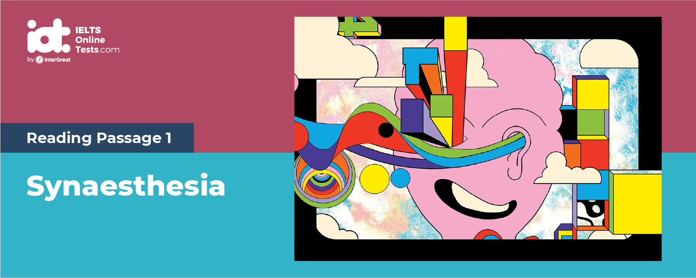
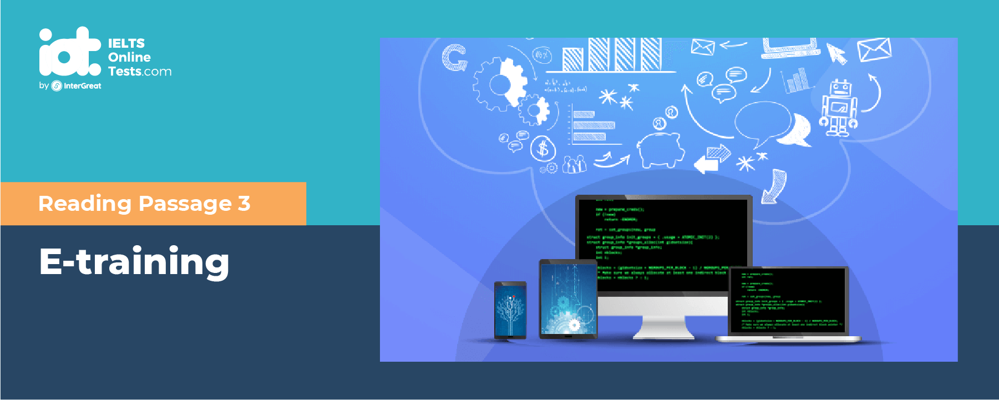
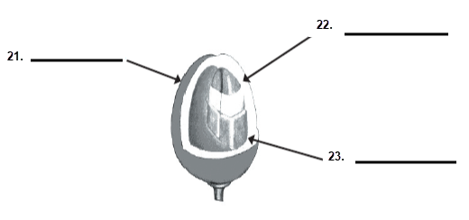
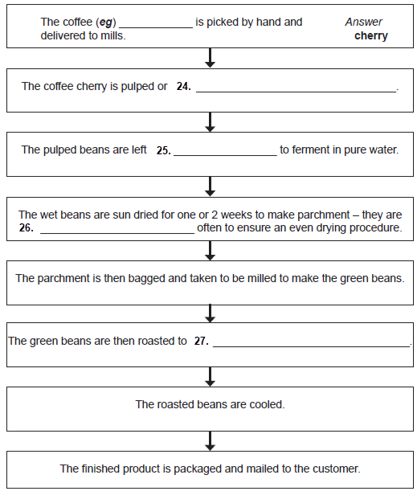

Part 1
READING PASSAGE 1
You should spend about 20 minutes on Questions 1-14, which are based on Reading Passage 1 below.

Synaesthesia
A
Imagine a page with a square box in the middle. The box is lined with rows of the number 5, repeated over and over. All of the 5s are identical in size, font and colour, and equally distributed across the box. There is, however, a trick: among those 5s, hiding in plain sight is a single, capital letter S. Almost the same in shape, it is impossible to spot without straining your eyes for a good few minutes. Unless that is, you are a grapheme – colour synaesthete – a person who sees each letter and number in different colours. With all the 5s painted in one colour and the rogue S painted in another, a grapheme – colour synaesthete will usually only need a split second to identify the latter.
B
Synaesthesia, loosely translated as “senses coming together” from the Greek words syn (“with”) and aesthesis (“sensation”), is an interesting neurological phenomenon that causes different senses to be combined. This might mean that words have a particular taste (for example, the word “door” might taste like bacon), or that certain smells produce a particular colour. It might also mean that each letter and number has its own personality-the letter A might be perky, the letter B might be shy and self-conscious, etc. Some synaesthetes might even experience other people’s sensations, for example feeling pain in their chest when they witness a film character gets shot. The possibilities are endless: even though synaesthesia is believed to affect less than 5% of the general population, at least 60 different combinations of senses have been reported so far. What all these sensory associations have in common is that they are all involuntary and impossible to repress and that they usually remain quite stable over time.
C
Synaesthesia was first documented in the early 19th century by German physician Georg Sachs, who dedicated two pages of his dissertation on his own experience with the condition. It wasn’t, however, until the mid-1990s that empirical research proved its existence when Professor Simon Baron-Cohen and his colleagues used fMRls on six synaesthetes and discovered that the parts of the brain associated with vision were active during auditory stimulation, even though the subjects were blindfolded.
D
What makes synaesthesia a particularly interesting condition is that it isn’t an illness at all. If anything, synaesthetes often report feeling sorry for the rest of the population, as they don’t have the opportunity to experience the world in a multisensory fashion like they do. Very few drawbacks have been described, usually minimal: for instance, some words might have an unpleasant taste (imagine the word “hello” tasting like spoilt milk), while some synaesthetes find it distressing when they encounter people with names which don’t reflect their personality (imagine meeting a very interesting person named “Lee”, when the letter E has a dull or hideous colour for you-or vice versa). Overall, however, synaesthesia is widely considered more of a blessing than a curse and it is often linked to intelligence and creativity, with celebrities such as Lady Gaga and Pharrell Williams claiming to have it.
E
Another fascinating side of synaesthesia is the way it could potentially benefit future generations. In a 2013 study, Dr Witthof and Dr Winawer discovered that grapheme-colour synaesthetes who had never met each other before experienced strikingly similar pairings between graphemes and colours-pairings which were later traced back to a popular set of Fischer-Price magnets that ten out of eleven participants distinctly remembered possessing as children. This was particularly peculiar as synaesthesia is predominantly considered to be a hereditary condition, and the findings suggested that a synaesthete’s environment might play a determining role in establishing synaesthetic associations. If that was true, researchers asked, then might it not be possible that synaesthesia can actually be taught?
F
As it turns out, the benefits of teaching synaesthesia would be tremendous. According to research conducted by Dr Clare Jonas at the University of East London, teaching people to create grapheme-colour associations the same way as a synaesthete may have the possibility to improve cognitive function and memory. As she put it, ‘one possibility is guarding against cognitive decline in older people-using synaesthesia in the creation of mnemonics to remember things such as shopping lists.’ To that end, researchers in the Netherlands have already begun developing a web browser plug-in that will change the colours of certain letters. Rothen and his colleagues corroborate the theory: in a paper published in 2011, they suggest that synaesthesia might be more than a hereditary condition, as the non-synaesthetic subjects of their study were able to mimic synaesthetic associations long after leaving the lab.
G
There is obviously still a long way to go before we can fully understand synaesthesia and what causes it. Once we do, however, it might not be too long before we find out how to teach non-synaesthetes how to imitate its symptoms in a way that induces the same benefits 4.4% of the world’s population currently enjoy.
Part 2
READING PASSAGE 2
You should spend about 20 minutes on Questions 15-27, which are based on Reading Passage 1 below.
@2x.png)
Coffee then and now (History of coffee)
A
Coffee was first discovered in Eastern Africa in an area we know today as Ethiopia. A popular legend refers to a goat herder by the name of Kaldi, who observed his goats acting unusually friskily after eating berries from a bush. Curious about this phenomenon, Kaldi tried eating the berries himself. He found that these berries gave him renewed energy.
B
The news of this energy laden fruit quickly moved throughout the region. Coffee berries were transported from Ethiopia to the Arabian Peninsula, and were first cultivated in what today is the country of Yemen. Coffee remained a secret in Arabia before spreading to Turkey and then to the European continent by means of Venetian trade merchants.
C
Coffee was first eaten as a food though later people in Arabia would make a drink out of boiling the beans for its narcotic effects and medicinal value. Coffee for a time was known as Arabian wine to Muslims who were banned from alcohol by Islam. It was not until after coffee had been eaten as a food product, a wine and a medicine that it was discovered, probably by complete accident in Turkey, that by roasting the beans a delicious drink could be made. The roasted beans were first crushed and then boiled in water, creating a crude version of the beverage we enjoy today. The first coffee houses were opened in Europe in the 17th Century and in 1675, the Viennese established the habit of refining the brew by filtering out the grounds, sweetening it, and adding a dash of milk.
D
If you were to explore the planet for coffee, you would find about 60 species of coffee plants growing wild in Africa, Malaysia, and other regions. But only about ten of them are actually cultivated. Of these ten, two species are responsible for almost all the coffee produced in the world: Coffea Arabica and Coffea Canephora (usually known as Robusta). Because of ecological differences existing among the various coffee producing countries, both types have undergone many mutations and now exist in many sub-species.
E
Although wild plants can reach 10 - 12 metres in height, the plantation one reaches a height of around four metres. This makes the harvest and flowering easier, and cultivation more economical. The flowers are white and sweet-scented like the Spanish jasmine. Flowers give way to a red, darkish berry. At first sight, the fruit is like a big cherry both in size and in colour. The berry is coated with a thin, red film (epicarp) containing a white, sugary mucilaginous flesh (mesocarp). Inside the pulp there are the seeds in the form of two beans coupled at their flat surface. Beans are in turn coated with a kind of resistant, golden yellow parchment, (called endocarp). When peeled, the real bean appears with another very thin silvery film. The bean is bluish green verging on bronze, and is at the most 11 millimetres long and 8 millimetres wide.
F
Coffee plants need special conditions to give a satisfactory crop. The climate needs to be hot-wet or hot temperate, between the Tropic of Cancer and the Tropic of Capricorn, with frequent rains and temperatures varying from 15 to 25 Degrees C. The soil should be deep, hard, permeable, well irrigated, with well-drained subsoil. The best lands are the hilly ones or from just-tilled woods. The perfect altitude is between 600 and 1200 metres, though some varieties thrive at 2000-2200 metres. Cultivation aimed at protecting the plants at every stage of growth is needed. Sowing should be in sheltered nurseries from which, after about six months, the seedlings should be moved to plantations in the rainy season where they are usually alternated with other plants to shield them from wind and excessive sunlight. Only when the plant is five years old can it be counted upon to give a regular yield. This is between 400 grams and two kilos of arabica beans for each plant, and 600 grams and two kilos for robusta beans.
G
Harvesting time depends on the geographic situation and it can vary greatly therefore according to the various producing countries. First, the ripe beans are picked from the branches. Pickers can selectively pick approximately 250 to 300 pounds of coffee cherry a day. At the end of the day, the pickers bring their heavy burlap bags to pulping mills where the cherry coffee can be pulped (or wet milled). The pulped beans then rest, covered in pure rainwater to ferment overnight. The next day the wet beans are hand-distributed upon the drying floor to be sun dried. This drying process takes from one to two weeks depending on the amount of sunny days available. To make sure they dry evenly, the beans need to be raked many times during this drying time. Two weeks later the sun dried beans, now called parchment, are scooped up, bagged and taken to be milled. Huge milling machines then remove the parchment and silver skin, which renders a green bean suitable for roasting. The green beans are roasted according to the customers’ specifications and, after cooling, the beans are then packaged and mailed to customers.
Part 3
READING PASSAGE 3
You should spend about 20 minutes on Questions 28-40, which are based on Reading Passage 1 below.

E-training
A
E-learning is the unifying term to describe the fields of online learning, web-based training, and technology-delivered instruction, which can be a great benefit to corporate e-learning. IBM, for instance, claims that the institution of its e-training program, Basic Blue, whose purpose is to train new managers, saved the company in the range of $200 million in 1999. Cutting the travel expenses required to bring employees and instructors to a central classroom account for the lion’s share of the savings. With an online course, employees can learn from any Internet-connected PC, anywhere in the world. Ernst and Young reduced training costs by 35 percent while improving consistency and scalability.
B
In addition to generally positive economic benefits, other advantages such as convenience, standardized delivery, self-paced learning, and a variety of available content, have made e-learning a high priority for many corporations. E-learning is widely believed to offer flexible “any time, any place” learning. The claim for “any place” is valid in principle and is a great development. Many people can engage with rich learning materials that simply were not possible in a paper of broadcast distance learning era. For teaching specific information and skills, e-training holds great promise. It can be especially effective at helping employees prepare for IT certification programs. E-learning also seems to effectively address topics such as sexual harassment education’, safety training and management training – all areas where a clear set of objectives can be identified. Ultimately, training experts recommend a “blended” approach that combines both online and in-person training as the instruction requires. E-learning is not an end-all solution. But if it helps decrease costs and windowless classrooms filled with snoring students, it definitely has its advantages.
C
Much of the discussion about implementing e-learning has focused on the technology, but as Driscoll and others have reminded us, e-learning is not just about the technology, but also many human factors. As any capable manager knows, teaching employees new skills is critical to a smoothly run business. Having said that, however, the traditional route of classroom instruction runs the risk of being expensive, slow and, oftentimes, ineffective. Perhaps the classroom’s greatest disadvantage is the fact that it takes employees out of their jobs. Every minute an employee is sitting in a classroom training session is a minute they’re not out on the floor working. It now looks as if there is a way to circumvent these traditional training drawbacks. E-training promises more effective teaching techniques by integrating audio, video, animation, text and interactive materials with the intent of teaching each student at his or her own pace. In addition to higher performance results, there are other immediate benefits to students such as increased time on task, higher levels of motivation, and reduced test anxiety for many learners.
D
On the other hand, nobody said E-training technology would be cheap. E-training service providers, on the average, charge from $10,000 to $60,000 to develop one hour of online instruction. This price varies depending on the complexity of the training topic and the media used. HTML pages are a little cheaper to develop while streaming-video presentations or flash animations cost more. Course content is just the starting place for the cost. A complete e-learning solution also includes the technology platform (the computers, applications and network connections that are used to deliver the courses). This technology platform, known as a learning management system (LMS), can either be installed onsite or outsourced. Add to that cost the necessary investments in network bandwidth to deliver multimedia courses, and you’re left holding one heck of a bill. For the LMS infrastructure and a dozen or so online courses, costs can top $500,000 in the first year. These kinds of costs mean that custom e-training is, for the time being, an option only for large organizations. For those companies that have a large enough staff, the e-training concept pays for itself. Aware of this fact, large companies are investing heavily in online training. Today, over half of the 400-plus courses that Rockwell Collins offers are delivered instantly to its clients in an e-learning format, a change that has reduced its annual training costs by 40%. Many other success stories exist.
E
E-learning isn’t expected to replace the classroom entirely. For one thing, bandwidth limitations are still an issue in presenting multimedia over the Internet. Furthermore, e-training isn’t suited to every mode of instruction or topic. For instance, it’s rather ineffective imparting cultural values or building teams. If your company has a unique corporate culture is would be difficult to convey that to first-time employees through a computer monitor. Group training sessions are more ideal for these purposes. In addition, there is a perceived loss of research time because of the work involved in developing and teaching online classes. Professor Wallin estimated that it required between 500 and 1,000 person-hours, that is, Wallin-hours, to keep the course at the appropriate level of currency and usefulness. (Distance learning instructors often need technical skills, no matter how advanced the courseware system.) That amounts to between a quarter and half of a person-year. Finally, teaching materials require computer literacy and access to equipment. Any e-Learning system involves basic equipment and a minimum level of computer knowledge in order to perform the tasks required by the system. A student that does not possess these skills, or have access to these tools, cannot succeed in an e-Learning program.
F
While few people debate the obvious advantages of e-learning, systematic research is needed to confirm that learners are actually acquiring and using the skills that are being taught online, and that e-learning is the best way to achieve the outcomes in a corporate environment. Nowadays, a go-between style of Blended learning, which refers to a mixing of different learning environments, is gaining popularity. It combines traditional face-to-face classroom methods with more modern computer-mediated activities. According to its proponents, the strategy creates a more integrated approach for both instructors and learners. Formerly, technology-based materials played a supporting role in face-to-face instruction. Through a blended learning approach, technology will be more important.
Part 1
Questions 1-7
The reading passage has 7 paragraphs, A-G.
Which paragraph contains the following information?
Write the correct letter, A-G, in boxes 1-7 on your answer sheet.
1. some of the disadvantages related to synaesthesia
2. what scientists think about synaesthesia’s real-life usefulness
3. a prediction for the future of synaesthesia
4. an example of how grapheme-colour synaesthesia works
5. a brief history of synaesthesia
6. some of the various different types of synaesthesia
7. information about a study that suggests synaesthetic symptoms aren’t arbitrary
Questions 8-11
Do the following statements agree with the information given in Reading Passage 1?
In boxes 8-11 on your answer sheet, write
| TRUE. | if the statement agrees with the information | |
| FALSE. | if the statement contradicts the information | |
| NOT GIVEN. | If there is no information on this |
8. There are 60 different types of synaesthesia.
9. Before Professor Simon Baron-Cohen’s research, synaesthesia was thought to be a myth.
10. A lot of celebrities are affected by synaesthesia.
11. Most scientists believe that synaesthesia runs in families.
Questions 12-14
Complete the summary.
Choose ONE WORD ONLY from the passage for each answer.
Write your answers in boxes 12-14 on your answer sheet
Synaesthesia is a unique neurological condition that causes different senses to get mixed.
Recent research has suggested that teaching synaesthesia to non-synaesthetes can enhance 12 and guard against the deterioration of cognitive 13 unfortunately, it might be a while before we come up with a beneficial way to 14 it to the general population.
Part 2
Questions 15-20
The reading passage on The Story of Coffee has 7 paragraphs A-G.
From the list of headings below choose the most suitable headings for paragraphs B-G.
Write the appropriate number (i-xi) in boxes 15-20 on your answer sheet.
NB There are more headings than paragraphs, so you will not use them all.
| i. | Growing Coffee | |
| ii. | Problems with Manufacture | |
| iii. | Processing the Bean | |
| iv. | First Contact | |
| v. | Arabian Coffee | |
| vi. | Coffee Varieties | |
| vii. | Modern Coffee | |
| viii. | The Spread of Coffee | |
| ix. | Consuming Coffee | |
| x. | Climates for Coffee | |
| xi. | The Coffee Plant |
Example Answer
Paragraph A iv
15. Paragraph B
16. Paragraph C
17. Paragraph D
18. Paragraph E
19. Paragraph F
20. Paragraph G
Questions 21-23
Complete the labels on the diagram of a coffee bean below.
Choose your answers from the text and write them in boxes 21-23 on your answer sheet.
21
22
23

Questions 24-27
Using the information in the passage, complete the flowchart below.
Write your answers in boxes 24-27 on your answer sheet.
Use NO MORE THAN TWO WORDS from the passage for each answer.
Coffee Production Process

24
25
26
27
Part 3
Questions 28-33
The reading passage has six paragraphs, A-F
Choose the correct heading for paragraphs A-F from the list below.
Write the correct number, i-xi, in boxes 28-33 on your answer sheet.
| List of Headings | ||
| i. | overview of the benefits for application of E-training | |
| ii. | IBM’s successful choice of training | |
| iii. | Future directions and a new style of teaching | |
| iv. | learners’ achievement and advanced teaching materials | |
| v. | limitations when E-training compares with traditional class | |
| vi. | multimedia over the Internet can be a solution | |
| vii. | technology can be a huge financial burden | |
| viii. | the distance learners outperformed the traditional university learners worldwide | |
| ix. | other advantages besides economic consideration | |
| x. | Training offered to help people learn using computers | |
28. Paragraph A
29. Paragraph B
30. Paragraph C
31. Paragraph D
32. Paragraph E
33. Paragraph F
Questions 34-37
The reading Passage has six paragraphs A-F
Which paragraph contains the following information?
Write the correct letter A-F, in boxes 34-37 on your answer sheet.
34. Projected Basic Blue in IBM achieved great success.
35. E-learning wins as a priority for many corporations as its flexibility.
36. The combination of traditional and e-training environments may prevail.
37. Example of fast electronic delivery for a company’s products to its customer
Questions 38-40
Choose THREE correct letters, among A-E
Write your answers in boxes 38-40 on your answer sheet.